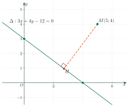

Relative Position, Angle and DistanceVị trí tương đối, góc và khoảng cách
Grade 10 · Topic: Coordinate Geometry in the PlaneLớp 10 · Chủ đề: Phương pháp tọa độ trong mặt phẳng
1Lesson IntroductionGiới thiệu bài học
Learning goalsMục tiêu bài học
By the end of this lesson you can:
Sau bài học này, em có thể:
recognise when two lines intersect, are parallel, coincide or are perpendicular;
nhận biết điều kiện để hai đường thẳng cắt nhau, song song, trùng nhau, vuông góc;
find the angle between two lines from normal (or direction) vectors;
tính góc giữa hai đường thẳng từ vectơ pháp tuyến (hoặc vectơ chỉ phương);
compute the distance from a point to a line and between two parallel lines;
tính khoảng cách từ một điểm đến một đường thẳng và giữa hai đường thẳng song song;
solve problems on areas, heights and shortest routes.
giải bài toán về diện tích, đường cao, đường đi ngắn nhất.
2Mathematical VocabularyTừ vựng Toán học
relative position of two lines – intersecting, parallel or coincident.
vị trí tương đối của hai đường thẳng – cắt nhau, song song hoặc trùng nhau.
angle between two lines – the smallest angle formed by the two lines, between \(0^\circ\) and \(90^\circ\).
góc giữa hai đường thẳng – góc nhỏ nhất tạo bởi hai đường thẳng, có số đo từ \(0^\circ\) đến \(90^\circ\).
distance from a point to a line – the length of the perpendicular segment from the point to the line.
khoảng cách từ một điểm đến một đường thẳng – độ dài đoạn vuông góc kẻ từ điểm đến đường thẳng.
3Useful English PhrasesCụm từ tiếng Anh thường gặp
The two lines are parallel.
Hai đường thẳng song song.
The normal vectors are perpendicular, so the lines are perpendicular.
Hai vectơ pháp tuyến vuông góc nên hai đường thẳng vuông góc.
The angle between the two lines is forty-five degrees.
Góc giữa hai đường thẳng bằng 45°.
The distance from M to the line is two units.
Khoảng cách từ M đến đường thẳng bằng 2 đơn vị.
Take the absolute value of the numerator.
Lấy giá trị tuyệt đối ở tử số.
4Prerequisite ReviewÔn tập kiến thức nền
From Bài 19: \(ax+by+c=0\) has normal vector \(\vec n=(a;b)\). From Bài 11: \(\cos(\vec u,\vec v)=\dfrac{\vec u\cdot\vec v}{|\vec u|\,|\vec v|}\), \(\vec u\perp\vec v\iff\vec u\cdot\vec v=0\).
Từ Bài 19: \(ax+by+c=0\) có vectơ pháp tuyến \(\vec n=(a;b)\). Từ Bài 11: \(\cos(\vec u,\vec v)=\dfrac{\vec u\cdot\vec v}{|\vec u|\,|\vec v|}\), \(\vec u\perp\vec v\iff\vec u\cdot\vec v=0\).
5TheoryLý thuyết
5.1 Relative position of two linesVị trí tương đối giữa hai đường thẳng
RuleQuy tắc
For \(\Delta_1: a_1x+b_1y+c_1=0\) and \(\Delta_2: a_2x+b_2y+c_2=0\), the number of common points is the number of solutions of the system of the two equations: one solution – they intersect; no solution – they are parallel; infinitely many – they coincide.
Với \(\Delta_1: a_1x+b_1y+c_1=0\) và \(\Delta_2: a_2x+b_2y+c_2=0\), số điểm chung bằng số nghiệm của hệ hai phương trình: một nghiệm – hai đường thẳng cắt nhau; vô nghiệm – song song; vô số nghiệm – trùng nhau.
Quick test with normal vectors: if \(\vec n_1\), \(\vec n_2\) are not collinear (\(a_1b_2-a_2b_1\ne0\)) the lines intersect; if they are collinear, take a point of \(\Delta_1\): it lies on \(\Delta_2\) – coincident, otherwise – parallel.
Kiểm tra nhanh bằng vectơ pháp tuyến: nếu \(\vec n_1\), \(\vec n_2\) không cùng phương (\(a_1b_2-a_2b_1\ne0\)) thì hai đường thẳng cắt nhau; nếu cùng phương, lấy một điểm của \(\Delta_1\): điểm đó thuộc \(\Delta_2\) thì trùng nhau, ngược lại thì song song.
\(\Delta_1\perp\Delta_2\iff\vec n_1\cdot\vec n_2=0\iff a_1a_2+b_1b_2=0\). With slopes: \(k_1k_2=-1\).
\(\Delta_1\perp\Delta_2\iff\vec n_1\cdot\vec n_2=0\iff a_1a_2+b_1b_2=0\). Theo hệ số góc: \(k_1k_2=-1\).
5.2 Angle between two linesGóc giữa hai đường thẳng
Definition and formulaĐịnh nghĩa và công thức
Two intersecting lines form four angles; the smallest is the angle \(\varphi\) between them. Parallel or coincident lines make an angle of \(0^\circ\). So \(0^\circ\le\varphi\le90^\circ\).
Hai đường thẳng cắt nhau tạo thành bốn góc; góc nhỏ nhất là góc \(\varphi\) giữa chúng. Hai đường thẳng song song hoặc trùng nhau tạo góc \(0^\circ\). Vậy \(0^\circ\le\varphi\le90^\circ\).
\(\cos\varphi=|\cos(\vec n_1,\vec n_2)|=\dfrac{|a_1a_2+b_1b_2|}{\sqrt{a_1^2+b_1^2}\,\sqrt{a_2^2+b_2^2}}\). The same formula works with direction vectors.
\(\cos\varphi=|\cos(\vec n_1,\vec n_2)|=\dfrac{|a_1a_2+b_1b_2|}{\sqrt{a_1^2+b_1^2}\,\sqrt{a_2^2+b_2^2}}\). Công thức đúng cả với vectơ chỉ phương.
Watch out!Lưu ý
The angle between two lines is never obtuse: use the absolute value. The angle between two vectors can be up to \(180^\circ\).
Góc giữa hai đường thẳng không bao giờ tù: luôn lấy giá trị tuyệt đối. Góc giữa hai vectơ có thể đến \(180^\circ\).
5.3 Distance from a point to a lineKhoảng cách từ một điểm đến một đường thẳng
FormulaCông thức
For \(M(x_0;y_0)\) and \(\Delta: ax+by+c=0\): \(d(M,\Delta)=\dfrac{|ax_0+by_0+c|}{\sqrt{a^2+b^2}}\).
Với \(M(x_0;y_0)\) và \(\Delta: ax+by+c=0\): \(d(M,\Delta)=\dfrac{|ax_0+by_0+c|}{\sqrt{a^2+b^2}}\).
Two parallel lines \(ax+by+c_1=0\), \(ax+by+c_2=0\) are at distance \(\dfrac{|c_1-c_2|}{\sqrt{a^2+b^2}}\) (distance from any point of one to the other).
Hai đường thẳng song song \(ax+by+c_1=0\), \(ax+by+c_2=0\) cách nhau \(\dfrac{|c_1-c_2|}{\sqrt{a^2+b^2}}\) (khoảng cách từ một điểm bất kì của đường này đến đường kia).

6Worked ExamplesVí dụ có lời giải
ExampleVí dụ 1BasicCơ bản – Relative positionsXét vị trí tương đối
Let \(\Delta_1: x-2y+3=0\). Find its position relative to \(\Delta_2: 2x-4y+1=0\), \(\Delta_3: -2x+4y-6=0\), \(\Delta_4: 2x+y-4=0\).
Cho \(\Delta_1: x-2y+3=0\). Xét vị trí tương đối của \(\Delta_1\) với \(\Delta_2: 2x-4y+1=0\), \(\Delta_3: -2x+4y-6=0\), \(\Delta_4: 2x+y-4=0\).
Analysis: Compare normal vectors, then test one point.
Phân tích: So sánh vectơ pháp tuyến, rồi thử một điểm.
\(\vec n_2=(2;-4)=2\vec n_1\); the point \((-3;0)\in\Delta_1\) gives \(-6+1\ne0\): \(\Delta_1\parallel\Delta_2\).
\(\vec n_2=(2;-4)=2\vec n_1\); điểm \((-3;0)\in\Delta_1\) cho \(-6+1\ne0\): \(\Delta_1\parallel\Delta_2\).
\(\Delta_3\) is \(\Delta_1\) multiplied by \(-2\): they coincide.
\(\Delta_3\) là \(\Delta_1\) nhân với \(-2\): trùng nhau.
\(\vec n_1\cdot\vec n_4=2-2=0\): \(\Delta_1\perp\Delta_4\); solving the system gives the common point \((1;2)\).
\(\vec n_1\cdot\vec n_4=2-2=0\): \(\Delta_1\perp\Delta_4\); giải hệ được giao điểm \((1;2)\).
Parallel; coincident; perpendicular at \((1;2)\).
Song song; trùng nhau; vuông góc tại \((1;2)\).
ExampleVí dụ 2BasicCơ bản – Angle between two linesGóc giữa hai đường thẳng
Find the angle between \(\Delta_1: 2x-y+1=0\) and \(\Delta_2: x-3y+4=0\).
Tính góc giữa hai đường thẳng \(\Delta_1: 2x-y+1=0\) và \(\Delta_2: x-3y+4=0\).
Analysis: \(\cos\varphi=\dfrac{|a_1a_2+b_1b_2|}{|\vec n_1|\,|\vec n_2|}\).
Phân tích: \(\cos\varphi=\dfrac{|a_1a_2+b_1b_2|}{|\vec n_1|\,|\vec n_2|}\).
\(\vec n_1=(2;-1)\), \(\vec n_2=(1;-3)\), \(\vec n_1\cdot\vec n_2=2+3=5\).
\(\vec n_1=(2;-1)\), \(\vec n_2=(1;-3)\), \(\vec n_1\cdot\vec n_2=2+3=5\).
\(\cos\varphi=\dfrac5{\sqrt5\cdot\sqrt{10}}=\dfrac5{5\sqrt2}=\dfrac{\sqrt2}2\).
\(\cos\varphi=\dfrac5{\sqrt5\cdot\sqrt{10}}=\dfrac5{5\sqrt2}=\dfrac{\sqrt2}2\).
\(\varphi=45^\circ\).
\(\varphi=45^\circ\).
ExampleVí dụ 3IntermediateTrung bình – Two distancesHai loại khoảng cách
a) Find the distance from \(M(2;-1)\) to \(\Delta: 3x+4y-12=0\). b) Find the distance between \(\Delta\) and \(\Delta': 3x+4y+3=0\).
a) Tính khoảng cách từ \(M(2;-1)\) đến \(\Delta: 3x+4y-12=0\). b) Tính khoảng cách giữa \(\Delta\) và \(\Delta': 3x+4y+3=0\).
Analysis: \(\sqrt{3^2+4^2}=5\).
Phân tích: \(\sqrt{3^2+4^2}=5\).
a) \(d=\dfrac{|6-4-12|}{5}=\dfrac{10}5=2\).
a) \(d=\dfrac{|6-4-12|}{5}=\dfrac{10}5=2\).
b) \(\Delta\parallel\Delta'\); \(A(4;0)\in\Delta\): \(d=\dfrac{|12+0+3|}5=3\) (or \(\dfrac{|-12-3|}5\)).
b) \(\Delta\parallel\Delta'\); \(A(4;0)\in\Delta\): \(d=\dfrac{|12+0+3|}5=3\) (hoặc \(\dfrac{|-12-3|}5\)).
a) 2; b) 3.
a) 2; b) 3.
ExampleVí dụ 4IntermediateTrung bình – Area by a heightDiện tích qua đường cao
Find the area of triangle \(ABC\) with \(A(1;1)\), \(B(4;5)\), \(C(5;0)\).
Tính diện tích tam giác \(ABC\) với \(A(1;1)\), \(B(4;5)\), \(C(5;0)\).
Analysis: \(S=\frac12\,AB\cdot d(C,AB)\).
Phân tích: \(S=\frac12\,AB\cdot d(C,AB)\).
\(\overrightarrow{AB}=(3;4)\), \(AB=5\); \(AB: 4(x-1)-3(y-1)=0\iff4x-3y-1=0\).
\(\overrightarrow{AB}=(3;4)\), \(AB=5\); \(AB: 4(x-1)-3(y-1)=0\iff4x-3y-1=0\).
\(d(C,AB)=\dfrac{|20-0-1|}{5}=\dfrac{19}5\); \(S=\frac12\cdot5\cdot\frac{19}5=\frac{19}2\).
\(d(C,AB)=\dfrac{|20-0-1|}{5}=\dfrac{19}5\); \(S=\frac12\cdot5\cdot\frac{19}5=\frac{19}2\).
\(S=\dfrac{19}2=9{,}5\).
\(S=\dfrac{19}2=9{,}5\).
ExampleVí dụ 5AdvancedNâng cao – The nearest point of a railwayĐiểm gần nhất trên đường ray
On a map (unit 1 km) a railway runs along \(\Delta: x+2y-7=0\). A village is at \(T(4;6)\). Find the length of the shortest road from \(T\) to the railway and the point \(H\) where it meets the railway.
Trên bản đồ (đơn vị 1 km), một đường ray chạy theo đường thẳng \(\Delta: x+2y-7=0\). Một ngôi làng ở \(T(4;6)\). Tính độ dài con đường ngắn nhất từ \(T\) đến đường ray và tìm điểm \(H\) nơi đường đó gặp đường ray.
Analysis: The shortest road is perpendicular to \(\Delta\): \(TH\) has direction \(\vec n=(1;2)\).
Phân tích: Đường ngắn nhất vuông góc với \(\Delta\): \(TH\) có vectơ chỉ phương \(\vec n=(1;2)\).
\(d=\dfrac{|4+12-7|}{\sqrt5}=\dfrac9{\sqrt5}=\dfrac{9\sqrt5}5\approx4{,}02\) km.
\(d=\dfrac{|4+12-7|}{\sqrt5}=\dfrac9{\sqrt5}=\dfrac{9\sqrt5}5\approx4{,}02\) km.
\(TH: x=4+t,\ y=6+2t\); substitute: \(4+t+12+4t-7=0\Rightarrow t=-\frac95\); \(H\left(\frac{11}5;\frac{12}5\right)\).
\(TH: x=4+t,\ y=6+2t\); thay vào \(\Delta\): \(4+t+12+4t-7=0\Rightarrow t=-\frac95\); \(H\left(\frac{11}5;\frac{12}5\right)\).
About 4,02 km, meeting the railway at \(H(2{,}2;\,2{,}4)\).
Khoảng 4,02 km, gặp đường ray tại \(H(2{,}2;\,2{,}4)\).
7PracticeBài tập luyện tập
A. Multiple ChoiceA. Trắc nghiệm nhiều lựa chọn
The lines \(x-3y+2=0\) and \(2x-6y+7=0\) are…
Hai đường thẳng \(x-3y+2=0\) và \(2x-6y+7=0\)…
Answer: b. Compare \(\vec n_1=(1;\,-3)\), \(\vec n_2=(2;\,-6)\).
Đáp án b. So sánh \(\vec n_1=(1;\,-3)\) và \(\vec n_2=(2;\,-6)\).
The distance from \(M(2;\,3)\) to \(3x-4y+1=0\) is…
Khoảng cách từ \(M(2;\,3)\) đến đường thẳng \(3x-4y+1=0\) là…
Answer: d. \(d=\dfrac{|ax_0+by_0+c|}{\sqrt{a^2+b^2}}\).
Đáp án d. \(d=\dfrac{|3\cdot(2)-4\cdot(3)+1|}{\sqrt{25}}=1\).
The angle between \(x+2y+1=0\) and \(3x+y-2=0\) is…
Góc giữa hai đường thẳng \(x+2y+1=0\) và \(3x+y-2=0\) bằng…
Answer: b. \(\cos\varphi=\dfrac{5}{\sqrt{50}}\).
Đáp án b. \(\cos\varphi=\dfrac{|\vec n_1\cdot\vec n_2|}{|\vec n_1||\vec n_2|}=\dfrac{5}{\sqrt{50}}\).
B. True or FalseB. Đúng hoặc sai
The lines \(2x+3y-1=0\) and \(3x-2y+3=0\) are perpendicular.
Hai đường thẳng \(2x+3y-1=0\) và \(3x-2y+3=0\) vuông góc với nhau.
\(a_1a_2+b_1b_2=0\).
\(a_1a_2+b_1b_2=0\).
The distance from \(M(1;\,2)\) to \(6x+8y-5=0\) equals \(\dfrac{17}{10}\).
Khoảng cách từ \(M(1;\,2)\) đến đường thẳng \(6x+8y-5=0\) bằng \(\dfrac{17}{10}\).
\(d=\dfrac{17}{10}=\dfrac{17}{10}\).
\(d=\dfrac{17}{10}=\dfrac{17}{10}\).
C. Short AnswerC. Trả lời ngắn
Find the distance between the parallel lines \(3x+4y-7=0\) and \(3x+4y+8=0\).
Tính khoảng cách giữa hai đường thẳng song song \(3x+4y-7=0\) và \(3x+4y+8=0\).
Enter a number.
Nhập một số.
\(\dfrac{|c_1-c_2|}{\sqrt{a^2+b^2}}=\dfrac{15}{5}\).
\(\dfrac{|c_1-c_2|}{\sqrt{a^2+b^2}}=\dfrac{15}{5}=3\).
On a map (unit 100 m) a house is at \(H(1;\,2)\) and a water main runs along \(4x+3y-24=0\). Find the length in metres of the shortest pipe from the house to the main.
Trên bản đồ (đơn vị 100 m), một ngôi nhà ở \(H(1;\,2)\), đường ống chính chạy theo đường thẳng \(4x+3y-24=0\). Tính chiều dài (mét) đoạn ống ngắn nhất nối nhà với đường ống chính.
Enter a number.
Nhập một số.
\(d=\dfrac{14}{5}\) units.
\(d=\dfrac{14}{5}\) đơn vị \(=280\) m.
A. Multiple ChoiceA. Trắc nghiệm nhiều lựa chọn
The lines \(2x+5y-1=0\) and \(-5x+2y+2=0\) are…
Hai đường thẳng \(2x+5y-1=0\) và \(-5x+2y+2=0\)…
Answer: c. Compare \(\vec n_1=(2;\,5)\), \(\vec n_2=(-5;\,2)\).
Đáp án c. So sánh \(\vec n_1=(2;\,5)\) và \(\vec n_2=(-5;\,2)\).
The distance from \(M(1;\,-1)\) to \(5x+12y-3=0\) is…
Khoảng cách từ \(M(1;\,-1)\) đến đường thẳng \(5x+12y-3=0\) là…
Answer: a. \(d=\dfrac{|ax_0+by_0+c|}{\sqrt{a^2+b^2}}\).
Đáp án a. \(d=\dfrac{|5\cdot(1)+12\cdot(-1)-3|}{\sqrt{169}}=\dfrac{10}{13}\).
The angle between \(2x+y+1=0\) and \(x-2y-2=0\) is…
Góc giữa hai đường thẳng \(2x+y+1=0\) và \(x-2y-2=0\) bằng…
Answer: b. \(\cos\varphi=\dfrac{0}{\sqrt{25}}\).
Đáp án b. \(\cos\varphi=\dfrac{|\vec n_1\cdot\vec n_2|}{|\vec n_1||\vec n_2|}=\dfrac{0}{\sqrt{25}}\).
B. True or FalseB. Đúng hoặc sai
The lines \(x+4y+2=0\) and \(4x+y+3=0\) are perpendicular.
Hai đường thẳng \(x+4y+2=0\) và \(4x+y+3=0\) vuông góc với nhau.
\(a_1a_2+b_1b_2=8\).
\(a_1a_2+b_1b_2=8\).
The distance from \(M(2;\,-1)\) to \(3x+4y+2=0\) equals \(1\).
Khoảng cách từ \(M(2;\,-1)\) đến đường thẳng \(3x+4y+2=0\) bằng \(1\).
\(d=\dfrac{4}{5}=\dfrac{4}{5}\).
\(d=\dfrac{4}{5}=\dfrac{4}{5}\).
C. Short AnswerC. Trả lời ngắn
Find the distance between the parallel lines \(5x+12y+6=0\) and \(5x+12y-20=0\).
Tính khoảng cách giữa hai đường thẳng song song \(5x+12y+6=0\) và \(5x+12y-20=0\).
Enter a number.
Nhập một số.
\(\dfrac{|c_1-c_2|}{\sqrt{a^2+b^2}}=\dfrac{26}{13}\).
\(\dfrac{|c_1-c_2|}{\sqrt{a^2+b^2}}=\dfrac{26}{13}=2\).
On a map (unit 100 m) a house is at \(H(2;\,5)\) and a water main runs along \(3x-4y+10=0\). Find the length in metres of the shortest pipe from the house to the main.
Trên bản đồ (đơn vị 100 m), một ngôi nhà ở \(H(2;\,5)\), đường ống chính chạy theo đường thẳng \(3x-4y+10=0\). Tính chiều dài (mét) đoạn ống ngắn nhất nối nhà với đường ống chính.
Enter a number.
Nhập một số.
\(d=\dfrac{4}{5}\) units.
\(d=\dfrac{4}{5}\) đơn vị \(=80\) m.
A. Multiple ChoiceA. Trắc nghiệm nhiều lựa chọn
The lines \(3x-y+4=0\) and \(-6x+2y-5=0\) are…
Hai đường thẳng \(3x-y+4=0\) và \(-6x+2y-5=0\)…
Answer: b. Compare \(\vec n_1=(3;\,-1)\), \(\vec n_2=(-6;\,2)\).
Đáp án b. So sánh \(\vec n_1=(3;\,-1)\) và \(\vec n_2=(-6;\,2)\).
The distance from \(M(-2;\,1)\) to \(8x+6y+5=0\) is…
Khoảng cách từ \(M(-2;\,1)\) đến đường thẳng \(8x+6y+5=0\) là…
Answer: c. \(d=\dfrac{|ax_0+by_0+c|}{\sqrt{a^2+b^2}}\).
Đáp án c. \(d=\dfrac{|8\cdot(-2)+6\cdot(1)+5|}{\sqrt{100}}=\dfrac{1}{2}\).
The angle between \(x+y+1=0\) and \(y-2=0\) is…
Góc giữa hai đường thẳng \(x+y+1=0\) và \(y-2=0\) bằng…
Answer: b. \(\cos\varphi=\dfrac{1}{\sqrt{2}}\).
Đáp án b. \(\cos\varphi=\dfrac{|\vec n_1\cdot\vec n_2|}{|\vec n_1||\vec n_2|}=\dfrac{1}{\sqrt{2}}\).
B. True or FalseB. Đúng hoặc sai
The lines \(5x-2y+3=0\) and \(2x+5y+3=0\) are perpendicular.
Hai đường thẳng \(5x-2y+3=0\) và \(2x+5y+3=0\) vuông góc với nhau.
\(a_1a_2+b_1b_2=0\).
\(a_1a_2+b_1b_2=0\).
The distance from \(M(1;\,1)\) to \(4x-3y+6=0\) equals \(2\).
Khoảng cách từ \(M(1;\,1)\) đến đường thẳng \(4x-3y+6=0\) bằng \(2\).
\(d=\dfrac{7}{5}=\dfrac{7}{5}\).
\(d=\dfrac{7}{5}=\dfrac{7}{5}\).
C. Short AnswerC. Trả lời ngắn
Find the distance between the parallel lines \(8x-6y+3=0\) and \(8x-6y+33=0\).
Tính khoảng cách giữa hai đường thẳng song song \(8x-6y+3=0\) và \(8x-6y+33=0\).
Enter a number.
Nhập một số.
\(\dfrac{|c_1-c_2|}{\sqrt{a^2+b^2}}=\dfrac{30}{10}\).
\(\dfrac{|c_1-c_2|}{\sqrt{a^2+b^2}}=\dfrac{30}{10}=3\).
On a map (unit 100 m) a house is at \(H(1;\,1)\) and a water main runs along \(12x+5y-30=0\). Find the length in metres of the shortest pipe from the house to the main.
Trên bản đồ (đơn vị 100 m), một ngôi nhà ở \(H(1;\,1)\), đường ống chính chạy theo đường thẳng \(12x+5y-30=0\). Tính chiều dài (mét) đoạn ống ngắn nhất nối nhà với đường ống chính.
Enter a number.
Nhập một số.
\(d=\dfrac{13}{13}\) units.
\(d=\dfrac{13}{13}\) đơn vị \(=100\) m.
D. Self-practice: Multiple ChoiceD. Tự luyện: trắc nghiệm
The lines \(-x+4y=0\) and \(-4x-y+5=0\) are…
Hai đường thẳng \(-x+4y=0\) và \(-4x-y+5=0\)…
Answer: b. \(\vec n_1\cdot\vec n_2=-1\cdot(-4)+4\cdot-1=0\).
Đáp án b. \(\vec n_1\cdot\vec n_2=-1\cdot(-4)+4\cdot-1=0\) nên hai đường thẳng vuông góc.
The lines \(3x+2y-4=0\) and \(mx+3y+1=0\) are perpendicular when \(m=\)…
Hai đường thẳng \(3x+2y-4=0\) và \(mx+3y+1=0\) vuông góc khi \(m=\)…
Answer: c. \(\vec n_1\cdot\vec n_2=3 m+6=0\).
Đáp án c. \(\vec n_1\cdot\vec n_2=0\iff 3m+6=0\iff m=-2\).
The line through \(M(3;\,1)\) parallel to \(4x+y-2=0\) is…
Đường thẳng đi qua \(M(3;\,1)\) và song song với \(4x+y-2=0\) là…
Answer: a. Same normal vector \((4;\,1)\): \(4(x-3)+1(y-1)=0\).
Đáp án a. Cùng vectơ pháp tuyến \((4;\,1)\): \(4(x-3)+1(y-1)=0\).
The distance from \(M(-3;\,2)\) to \(6x+8y-3=0\) is…
Khoảng cách từ \(M(-3;\,2)\) đến đường thẳng \(6x+8y-3=0\) là…
Answer: b. \(d=\dfrac{|6\cdot(-3)+8\cdot(2)-3|}{\sqrt{100}}\).
Đáp án b. \(d=\dfrac{|ax_0+by_0+c|}{\sqrt{a^2+b^2}}=\dfrac{5}{10}\).
The lines \(x+3=0\) and \(-x+2y-13=0\) meet at…
Giao điểm của hai đường thẳng \(x+3=0\) và \(-x+2y-13=0\) là…
Answer: d. Solve the system of the two equations.
Đáp án d. Giải hệ hai phương trình; kiểm tra: tọa độ \((-3;\,5)\) thỏa mãn cả hai.
The angle between \(-4x+3y+4=0\) and \(-7x-y-3=0\) is…
Góc giữa hai đường thẳng \(-4x+3y+4=0\) và \(-7x-y-3=0\) bằng…
Answer: c. \(\cos\varphi=\dfrac{25}{\sqrt{25}\sqrt{50}}\).
Đáp án c. \(\cos\varphi=\dfrac{25}{\sqrt{25}\cdot\sqrt{50}}=\dfrac{\sqrt2}{2}\).
Let \(\varphi\) be the angle between \(x-4y+2=0\) and \(-3x-2y+1=0\). Then \(\cos\varphi=\)…
Gọi \(\varphi\) là góc giữa hai đường thẳng \(x-4y+2=0\) và \(-3x-2y+1=0\). Khi đó \(\cos\varphi=\)…
Answer: c. \(\cos\varphi=\dfrac{|\vec n_1\cdot\vec n_2|}{|\vec n_1|\,|\vec n_2|}=\dfrac{5}{\sqrt{221}}\).
Đáp án c. \(\cos\varphi=\dfrac{|a_1a_2+b_1b_2|}{\sqrt{a_1^2+b_1^2}\sqrt{a_2^2+b_2^2}}=\dfrac{5}{\sqrt{221}}\).
The distance between the parallel lines \(5x+12y-4=0\) and \(5x+12y-19=0\) is…
Khoảng cách giữa hai đường thẳng song song \(5x+12y-4=0\) và \(5x+12y-19=0\) là…
Answer: d. Take a point of one line and its distance to the other: \(\dfrac{|c_1-c_2|}{\sqrt{a^2+b^2}}\).
Đáp án d. Lấy một điểm trên đường này rồi tính khoảng cách đến đường kia: \(\dfrac{|c_1-c_2|}{\sqrt{a^2+b^2}}=\dfrac{15}{13}\).
On a map (unit 100 m) a house is at \(H(6;\,4)\) and a straight water main runs along \(12x-5y+25=0\). The shortest pipe from the house to the main is…
Trên bản đồ (đơn vị 100 m), một ngôi nhà ở \(H(6;\,4)\), đường ống nước chính chạy theo đường thẳng \(12x-5y+25=0\). Đoạn ống ngắn nhất nối nhà với đường ống chính dài…
Answer: d. The shortest pipe is perpendicular: \(d=\dfrac{77}{13}\) units.
Đáp án d. Đoạn ngắn nhất là đoạn vuông góc: \(d=\dfrac{77}{13}\) đơn vị \(=\dfrac{7700}{13}\) m.
D. Self-practice: Multiple ChoiceD. Tự luyện: trắc nghiệm
The lines \(2x+3y+1=0\) and \(-4x-6y-2=0\) are…
Hai đường thẳng \(2x+3y+1=0\) và \(-4x-6y-2=0\)…
Answer: c. The coefficients are proportional (factor \(-2\)).
Đáp án c. Các hệ số tỉ lệ (hệ số tỉ lệ \(-2\)) nên hai đường thẳng trùng nhau.
The lines \(x-3y-2=0\) and \(mx-1y+1=0\) are perpendicular when \(m=\)…
Hai đường thẳng \(x-3y-2=0\) và \(mx-1y+1=0\) vuông góc khi \(m=\)…
Answer: b. \(\vec n_1\cdot\vec n_2=1 m+3=0\).
Đáp án b. \(\vec n_1\cdot\vec n_2=0\iff 1m+3=0\iff m=-3\).
The line through \(M(0;\,-4)\) parallel to \(-3x-4y+1=0\) is…
Đường thẳng đi qua \(M(0;\,-4)\) và song song với \(-3x-4y+1=0\) là…
Answer: c. Same normal vector \((-3;\,-4)\): \(-3(x+0)-4(y+4)=0\).
Đáp án c. Cùng vectơ pháp tuyến \((-3;\,-4)\): \(-3(x+0)-4(y+4)=0\).
The distance from \(M(-2;\,-1)\) to \(4x+3y+2=0\) is…
Khoảng cách từ \(M(-2;\,-1)\) đến đường thẳng \(4x+3y+2=0\) là…
Answer: b. \(d=\dfrac{|4\cdot(-2)+3\cdot(-1)+2|}{\sqrt{25}}\).
Đáp án b. \(d=\dfrac{|ax_0+by_0+c|}{\sqrt{a^2+b^2}}=\dfrac{9}{5}\).
The lines \(-x=0\) and \(y-1=0\) meet at…
Giao điểm của hai đường thẳng \(-x=0\) và \(y-1=0\) là…
Answer: c. Solve the system of the two equations.
Đáp án c. Giải hệ hai phương trình; kiểm tra: tọa độ \((0;\,1)\) thỏa mãn cả hai.
The angle between \(-4x-y+2=0\) and \(x-4y+4=0\) is…
Góc giữa hai đường thẳng \(-4x-y+2=0\) và \(x-4y+4=0\) bằng…
Answer: a. \(\cos\varphi=\dfrac{0}{\sqrt{17}\sqrt{17}}\).
Đáp án a. \(\cos\varphi=\dfrac{0}{\sqrt{17}\cdot\sqrt{17}}=0\).
Let \(\varphi\) be the angle between \(-2x-y+1=0\) and \(4x+y-3=0\). Then \(\cos\varphi=\)…
Gọi \(\varphi\) là góc giữa hai đường thẳng \(-2x-y+1=0\) và \(4x+y-3=0\). Khi đó \(\cos\varphi=\)…
Answer: a. \(\cos\varphi=\dfrac{|\vec n_1\cdot\vec n_2|}{|\vec n_1|\,|\vec n_2|}=\dfrac{9}{\sqrt{85}}\).
Đáp án a. \(\cos\varphi=\dfrac{|a_1a_2+b_1b_2|}{\sqrt{a_1^2+b_1^2}\sqrt{a_2^2+b_2^2}}=\dfrac{9}{\sqrt{85}}\).
The distance between the parallel lines \(3x+4y-7=0\) and \(3x+4y=0\) is…
Khoảng cách giữa hai đường thẳng song song \(3x+4y-7=0\) và \(3x+4y=0\) là…
Answer: c. Take a point of one line and its distance to the other: \(\dfrac{|c_1-c_2|}{\sqrt{a^2+b^2}}\).
Đáp án c. Lấy một điểm trên đường này rồi tính khoảng cách đến đường kia: \(\dfrac{|c_1-c_2|}{\sqrt{a^2+b^2}}=\dfrac{7}{5}\).
On a map (unit 100 m) a house is at \(H(5;\,6)\) and a straight water main runs along \(3x-4y+10=0\). The shortest pipe from the house to the main is…
Trên bản đồ (đơn vị 100 m), một ngôi nhà ở \(H(5;\,6)\), đường ống nước chính chạy theo đường thẳng \(3x-4y+10=0\). Đoạn ống ngắn nhất nối nhà với đường ống chính dài…
Answer: a. The shortest pipe is perpendicular: \(d=\dfrac{1}{5}\) units.
Đáp án a. Đoạn ngắn nhất là đoạn vuông góc: \(d=\dfrac{1}{5}\) đơn vị \(=20\) m.
D. Self-practice: Multiple ChoiceD. Tự luyện: trắc nghiệm
The lines \(-4x-y-2=0\) and \(-12x-3y-9=0\) are…
Hai đường thẳng \(-4x-y-2=0\) và \(-12x-3y-9=0\)…
Answer: c. \(\dfrac{a_1}{a_2}=\dfrac{b_1}{b_2}\ne\dfrac{c_1}{c_2}\).
Đáp án c. \(\dfrac{a_1}{a_2}=\dfrac{b_1}{b_2}\ne\dfrac{c_1}{c_2}\) nên hai đường thẳng song song.
The lines \(2x-y-4=0\) and \(mx-2y+1=0\) are perpendicular when \(m=\)…
Hai đường thẳng \(2x-y-4=0\) và \(mx-2y+1=0\) vuông góc khi \(m=\)…
Answer: b. \(\vec n_1\cdot\vec n_2=2 m+2=0\).
Đáp án b. \(\vec n_1\cdot\vec n_2=0\iff 2m+2=0\iff m=-1\).
The line through \(M(3;\,0)\) parallel to \(-3x+2y-3=0\) is…
Đường thẳng đi qua \(M(3;\,0)\) và song song với \(-3x+2y-3=0\) là…
Answer: d. Same normal vector \((-3;\,2)\): \(-3(x-3)+2(y+0)=0\).
Đáp án d. Cùng vectơ pháp tuyến \((-3;\,2)\): \(-3(x-3)+2(y+0)=0\).
The distance from \(M(-1;\,-1)\) to \(5x+12y-8=0\) is…
Khoảng cách từ \(M(-1;\,-1)\) đến đường thẳng \(5x+12y-8=0\) là…
Answer: c. \(d=\dfrac{|5\cdot(-1)+12\cdot(-1)-8|}{\sqrt{169}}\).
Đáp án c. \(d=\dfrac{|ax_0+by_0+c|}{\sqrt{a^2+b^2}}=\dfrac{25}{13}\).
The lines \(-x+4y-21=0\) and \(-x-4y+19=0\) meet at…
Giao điểm của hai đường thẳng \(-x+4y-21=0\) và \(-x-4y+19=0\) là…
Answer: b. Solve the system of the two equations.
Đáp án b. Giải hệ hai phương trình; kiểm tra: tọa độ \((-1;\,5)\) thỏa mãn cả hai.
The angle between \(x-3y+3=0\) and \(2x-y-2=0\) is…
Góc giữa hai đường thẳng \(x-3y+3=0\) và \(2x-y-2=0\) bằng…
Answer: b. \(\cos\varphi=\dfrac{5}{\sqrt{10}\sqrt{5}}\).
Đáp án b. \(\cos\varphi=\dfrac{5}{\sqrt{10}\cdot\sqrt{5}}=\dfrac{\sqrt2}{2}\).
Let \(\varphi\) be the angle between \(-3x-2y-1=0\) and \(-4x+y-2=0\). Then \(\cos\varphi=\)…
Gọi \(\varphi\) là góc giữa hai đường thẳng \(-3x-2y-1=0\) và \(-4x+y-2=0\). Khi đó \(\cos\varphi=\)…
Answer: d. \(\cos\varphi=\dfrac{|\vec n_1\cdot\vec n_2|}{|\vec n_1|\,|\vec n_2|}=\dfrac{10}{\sqrt{221}}\).
Đáp án d. \(\cos\varphi=\dfrac{|a_1a_2+b_1b_2|}{\sqrt{a_1^2+b_1^2}\sqrt{a_2^2+b_2^2}}=\dfrac{10}{\sqrt{221}}\).
The distance between the parallel lines \(3x+4y-6=0\) and \(3x+4y+7=0\) is…
Khoảng cách giữa hai đường thẳng song song \(3x+4y-6=0\) và \(3x+4y+7=0\) là…
Answer: c. Take a point of one line and its distance to the other: \(\dfrac{|c_1-c_2|}{\sqrt{a^2+b^2}}\).
Đáp án c. Lấy một điểm trên đường này rồi tính khoảng cách đến đường kia: \(\dfrac{|c_1-c_2|}{\sqrt{a^2+b^2}}=\dfrac{13}{5}\).
On a map (unit 100 m) a house is at \(H(6;\,1)\) and a straight water main runs along \(4x-3y-30=0\). The shortest pipe from the house to the main is…
Trên bản đồ (đơn vị 100 m), một ngôi nhà ở \(H(6;\,1)\), đường ống nước chính chạy theo đường thẳng \(4x-3y-30=0\). Đoạn ống ngắn nhất nối nhà với đường ống chính dài…
Answer: d. The shortest pipe is perpendicular: \(d=\dfrac{9}{5}\) units.
Đáp án d. Đoạn ngắn nhất là đoạn vuông góc: \(d=\dfrac{9}{5}\) đơn vị \(=180\) m.
8Common MistakesLỗi thường gặp
Forgetting the absolute value in \(\cos\varphi\). An angle between lines is at most \(90^\circ\), so \(\cos\varphi\ge0\).
Quên dấu giá trị tuyệt đối trong \(\cos\varphi\). Góc giữa hai đường thẳng không quá \(90^\circ\) nên \(\cos\varphi\ge0\).
Writing the line in a non-general form before using \(d(M,\Delta)\). First bring it to \(ax+by+c=0\) (e.g. \(y=2x-1\to2x-y-1=0\)).
Dùng công thức khoảng cách khi đường thẳng chưa ở dạng tổng quát. Phải đưa về \(ax+by+c=0\) (ví dụ \(y=2x-1\to2x-y-1=0\)).
Distance between parallel lines with different coefficients. \(x+2y+1=0\) and \(2x+4y-3=0\): first make \(a\), \(b\) equal (\(2x+4y+2=0\)).
Khoảng cách giữa hai đường song song có hệ số khác nhau. \(x+2y+1=0\) và \(2x+4y-3=0\): phải đưa về cùng \(a\), \(b\) (\(2x+4y+2=0\)) trước.
Concluding "parallel" only because the normal vectors are collinear. Check a point: the lines may coincide.
Kết luận "song song" chỉ vì hai vectơ pháp tuyến cùng phương. Phải thử một điểm: hai đường thẳng có thể trùng nhau.
9Lesson SummaryTổng kết
Position: solve the system, or compare \(\vec n_1\), \(\vec n_2\) and test one point; \(\perp\iff a_1a_2+b_1b_2=0\).
Vị trí tương đối: giải hệ, hoặc so sánh \(\vec n_1\), \(\vec n_2\) và thử một điểm; vuông góc \(\iff a_1a_2+b_1b_2=0\).
Angle: \(\cos\varphi=\dfrac{|a_1a_2+b_1b_2|}{\sqrt{a_1^2+b_1^2}\sqrt{a_2^2+b_2^2}}\), \(0^\circ\le\varphi\le90^\circ\).
Góc: \(\cos\varphi=\dfrac{|a_1a_2+b_1b_2|}{\sqrt{a_1^2+b_1^2}\sqrt{a_2^2+b_2^2}}\), \(0^\circ\le\varphi\le90^\circ\).
Distance: \(d(M,\Delta)=\dfrac{|ax_0+by_0+c|}{\sqrt{a^2+b^2}}\); parallel lines: \(\dfrac{|c_1-c_2|}{\sqrt{a^2+b^2}}\).
Khoảng cách: \(d(M,\Delta)=\dfrac{|ax_0+by_0+c|}{\sqrt{a^2+b^2}}\); hai đường song song: \(\dfrac{|c_1-c_2|}{\sqrt{a^2+b^2}}\).
Key words: parallel, coincident, perpendicular, angle between lines, distance.
Từ cần nhớ: parallel, coincident, perpendicular, angle between lines, distance.